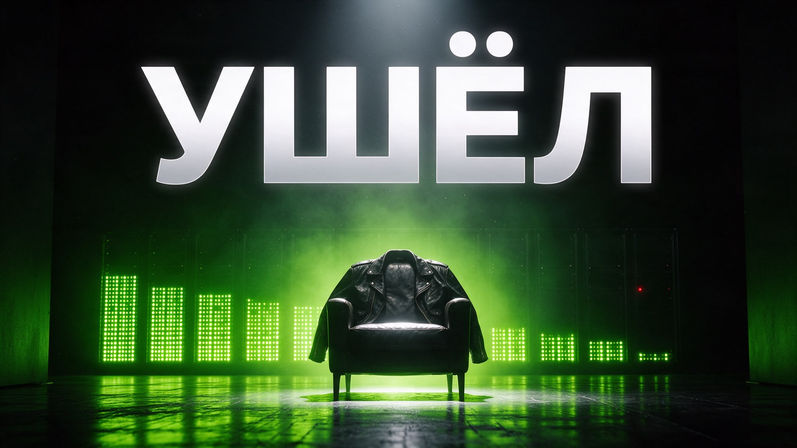
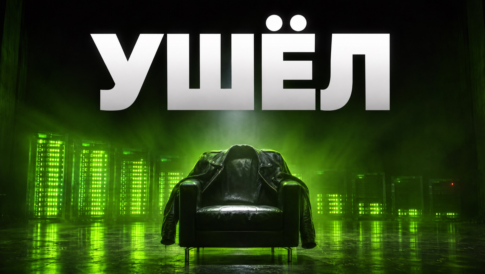
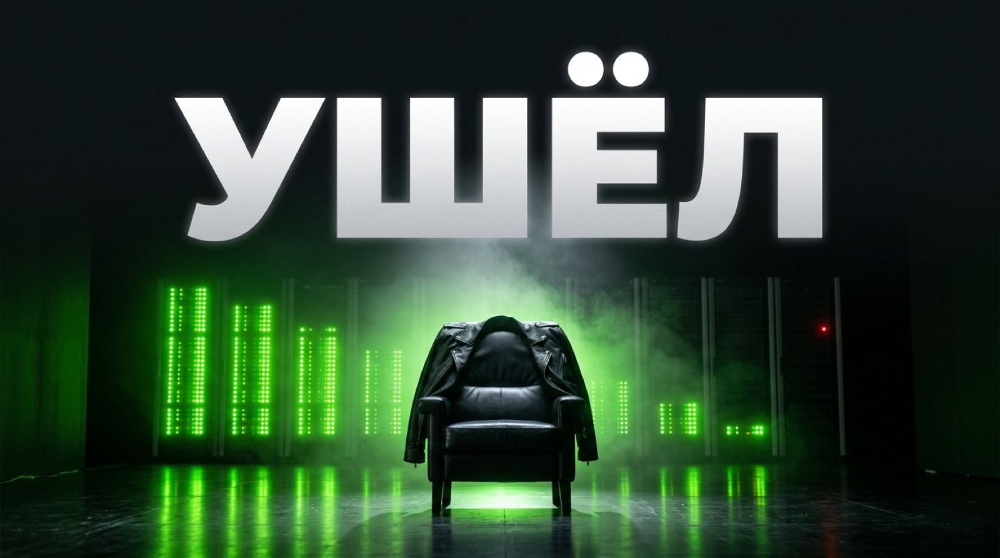
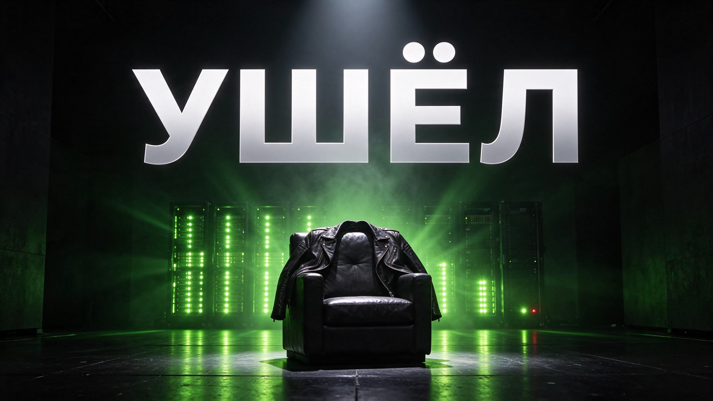
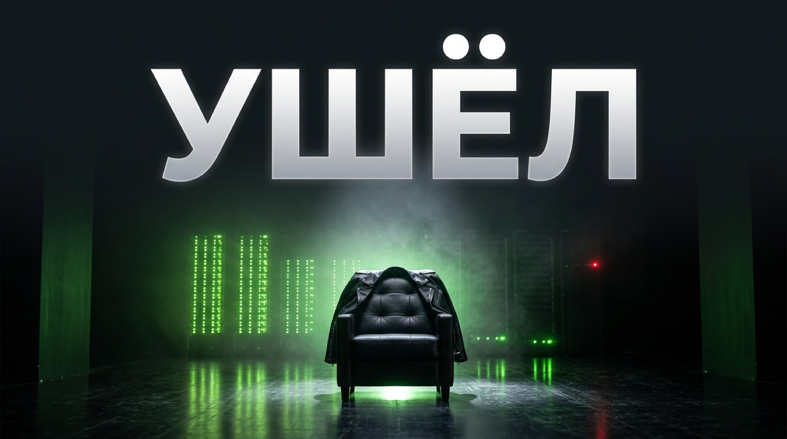

🟢 «УШЁЛ» — одно ТЗ на пяти моделях
Хуанг ушёл: пустое кресло с его кожаной курткой, зелёное свечение Nvidia. Серверные стойки гаснут слева направо — это падающий график. Промпт у всех одинаковый. «УШЁЛ» с точками над Ё — верно у всех пяти. Gemini Pro не нарисовал: Google показал «я не робот». Потрачено 350 кредитов. 19.11.2026




